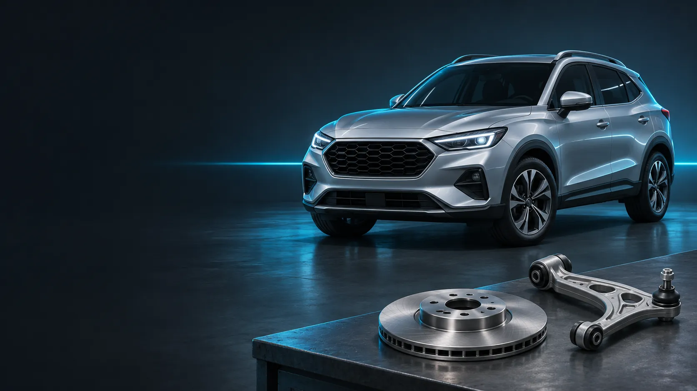
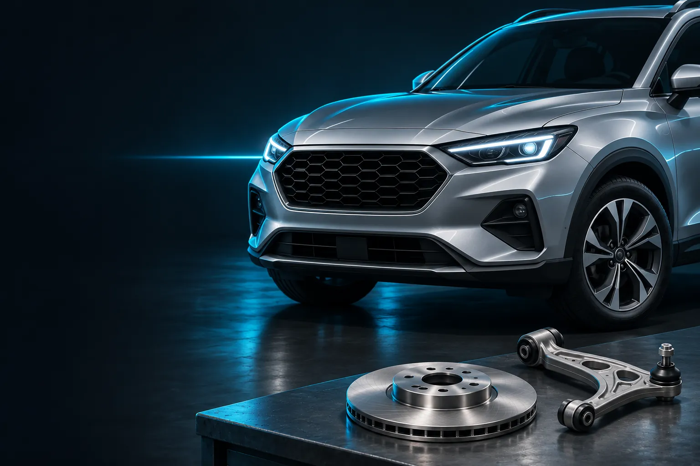
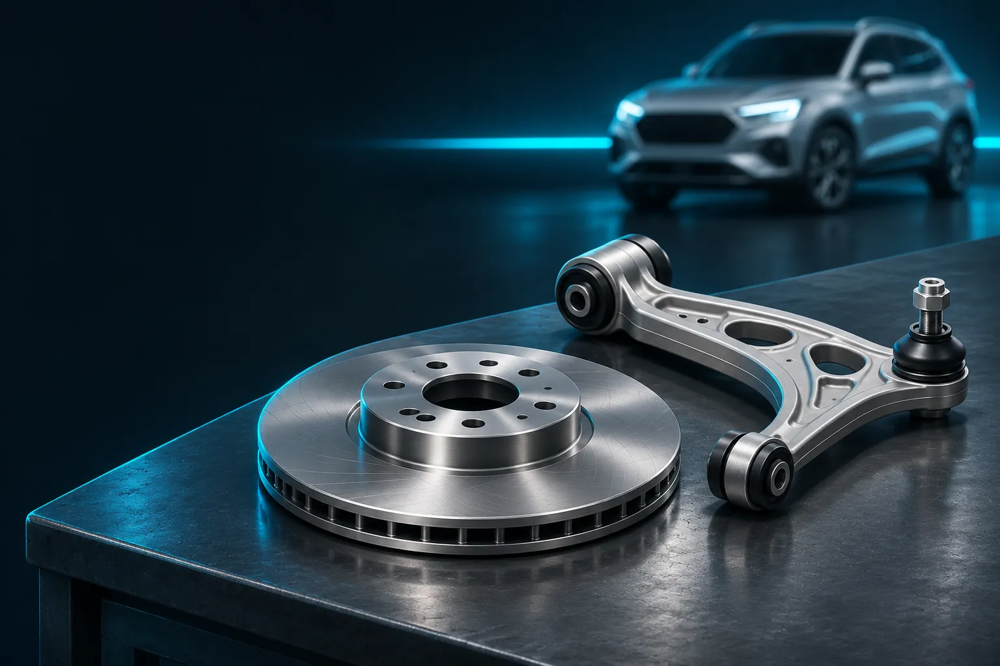

01 Veículo
Comece pelo carro.
Marca, modelo, ano e, se souber, a versão. Quanto mais completa a informação, mais objetivo fica o atendimento.
Isto não indica compatibilidade automática.



Consulta de peças
Informe o veículo e a peça que procura para preparar sua consulta.
01 Veículo
Marca, modelo, ano e, se souber, a versão. Quanto mais completa a informação, mais objetivo fica o atendimento.
Isto não indica compatibilidade automática.
02 Peça
Descreva com suas palavras: nome da peça, posição, sintoma ou código, se tiver. Não é preciso escolher uma categoria.
03 Consulta
Monte o resumo, copie e envie pelo canal de atendimento da loja.
Consulta de peças
A peça começa com a informação certa.
Informe o veículo e a peça que procura para preparar sua consulta.
01 Veículo
Marca, modelo, ano e, se souber, a versão. Quanto mais completa a informação, mais objetivo fica o atendimento.
Isto não indica compatibilidade automática.
02 Peça
Descreva com suas palavras: nome da peça, posição, sintoma ou código, se tiver. Não é preciso escolher uma categoria.
Consulta de peça
Preencha o essencial. Não pedimos CPF, placa ou qualquer dado pessoal. O resumo é montado aqui, na sua tela, e nada é enviado automaticamente.
Nada foi enviado. Cole o texto no canal de atendimento que a loja indicar.
O canal oficial confirmado até agora é o Instagram. Endereço, WhatsApp e horários serão incluídos depois de confirmados pela M&F Auto Peças.
@mefautopecas no Instagram